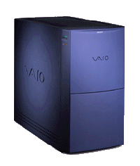

The Vaio line was created by Sony in 1996. It standed for "Video Audio Input Output, Then Video Audio Integrated Operation, Visual Audio Intelligent Organizer" It is where the purple brand colour originates from too, as both the English and Japanese pronunciation are similar to "Bio".
The Vaio line was split off into it's own company in 2014, although Sony does maintain a minority stake in the company, and holds exclusive marketing agreements in some countries.
The PCV line was the line used for desktop computers. The line launched with 2 models, the PCV-70 and PCV-90. The PCV line would see it's final models, the PCV-210 and PCV-230 in 1998.
In addition, there were several sublines, targeting specific needs or changes:
| Photo | Machine | Year Of Introduction | CPU | RAM | Hard Drive | Modem/Networking | Cache | Sound Card | GPU | Bundled Operating System | Bundled Software | Notes |
|---|---|---|---|---|---|---|---|---|---|---|---|---|
|  | PCV-90 | 1996 | Intel Pentium(200MHz, Socket 7 Dual Voltage) | 32MB, Expandable to 128MB |
2.5GB |
Unknown | 256KB | Unknown | ATi Rage 3D (W/ 2MB RAM) | Microsoft Windows 95 |
Vaio Space Net Space Netscape Navigator Voice View Billboard Music Guide Compton's Interactive Encyclopedia AOL Compuserve WOW! Microsoft 3D Movie Maker CyberPassage DeltaPoint Cartopedia The Family Doctor Invester Insight Launch (According to Drew1440, nothing happens) Microsoft Money 96 Microsoft Phone Microsoft Works 4.0 Microsoft Reference Quicken SE Gateway Sidekick 95 Reader Rabbit American Heritage Talking Dictionary Telephone Directory PC411 Wipeout (ATi CIF API version) MechWarrior 2 Microsoft Entertainment Pack Hover! (Also included with all copies of Windows 95) |